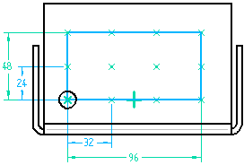
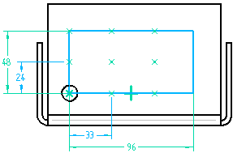
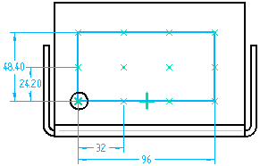
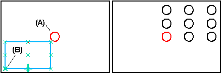
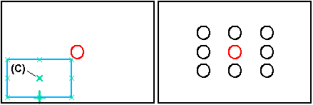
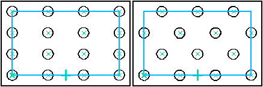
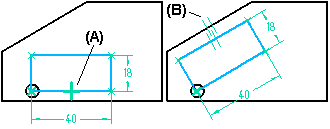

Rectangular Pattern (ordered)
Specifying a rectangular pattern type
You can create rectangular patterns with the Home tab→Pattern group→Pattern command  . With the profile window open, select the Rectangular Pattern button on the Features tab.
. With the profile window open, select the Rectangular Pattern button on the Features tab.
Rectangular patterns
You can construct rectangular patterns with the following placement options:
-
Fit
-
Fill
-
Fixed
Fit the pattern
With the Fit option, you specify the number of occurrences in the x and y directions, and the height and width of the pattern. The X Spacing and Y Spacing values on the command bar are calculated automatically, are read-only, and are not required to be whole numbers.
You can set the Fit option and then specify an X Count of 4, a Y Count of 3, a Width of 96, and a Height of 48.
The X Spacing between each occurrence is calculated automatically by dividing the Width by 3 (the X Count minus 1), for a result of 32. The Y Spacing is calculated automatically by dividing the Height by 2 (the Y Count minus 1) for a result of 24.

Fill the pattern
With the Fill option, you specify the x and y spacing, and the height and width of the pattern. The X Count and Y Count values on the command bar are calculated automatically, are read-only, and will always be whole numbers. The Fill option fills the area, but does not place the last row or column if the theoretical X or Y Count value is not a whole number.
You can set the Fill option and then specify an X spacing of 33, a Y spacing of 24, a width of 96, and a height of 48.
The X Count is calculated automatically by dividing the Width by the X Spacing, and then adding 1. Since the result in this example is 3.9, which is not a whole number, there is not enough room for the fourth occurrence, so the X Count is automatically rounded down to 3.
The Y Count is calculated by dividing the Height by the Y Spacing, and then adding 1. The result in this example is 3, which is a whole number, so there is room for the third occurrence.

Fixed pattern
With the Fixed option, you specify the number of occurrences in the x and y directions, and the x and y spacing. The Width and Height values on the command bar are calculated automatically, are read-only, and are not required to be whole numbers.
You can set the Fixed option, and then specify an X Count of 4, a Y Count of 3, an X Spacing of 32, and a Y Spacing of 24.20.
The Width is calculated automatically by multiplying the X Spacing times 3 (the X Count minus 1), for a result of 96.
The Height is calculated by multiplying the Y Spacing times 2 (the Y Count minus 1), for a result of 48.40.
When you place dimensions on the pattern profile placed using the Fixed option, the dimensions are driven, since the height and width values are calculated from the values you enter for the spacing and number of occurrences.

Defining the reference point
When you draw the rectangular pattern profile, the first point you click becomes the default reference point. The reference point is shown as a bold x symbol (B). Regardless of where you draw the pattern profile, the feature pattern is constructed relative to the reference point and the parent feature. For example, when patterning hole A, using reference point B, the pattern is constructed as shown.

You can change how the pattern is constructed by redefining the reference point. For example, you can move the reference point to the center occurrence (C).

Staggered patterns
By default, rectangular pattern members are aligned with each other along both axes. With the Stagger Options dialog box you can stagger rows or columns by a given value.

Changing the angle of a rectangular pattern
To change the angle of a rectangular pattern, first delete the horizontal relationship (A) on the pattern rectangle, and then place a dimension or relationship to control its angular orientation. For example, you can apply a parallel relationship (B) between the pattern rectangle and a part edge.

How do I
Construct an ordered rectangular pattern featureCreate a 2D rectangular pattern of sketches
Construct an ordered circular pattern feature
Create a 2D circular pattern of sketches
Construct a Fast Pattern
Construct a Smart Pattern
Define the pattern plane
Learn more
Pattern featuresCircular patterns
Look up more details
Pattern command (ordered)Rectangular Pattern command bar (ordered sketch)
Circular Pattern command bar (ordered sketch)
Pattern command bar